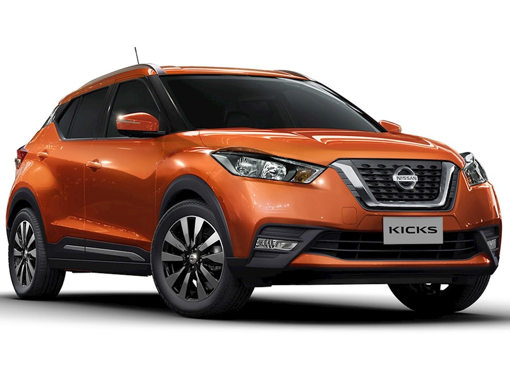
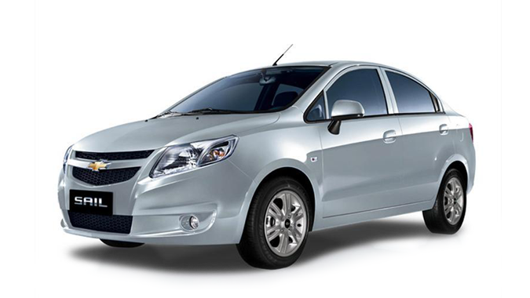
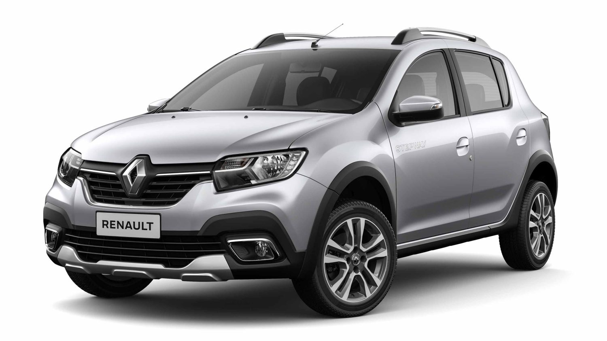

AUTOS EN DESCUENTO



Elija lo que se ajuste a su bolsillo.
NISSAN: SENSE MT
Desde
$62.990.000
-
Especificaciones
Sistema de alimentación de combustible
Inyección electrónica secuencial multi-punto con control de apertura de válvulas continuamente variable
Cilindrada (L)
1.6
Número y disposición de cilindros
4 cilindros en línea, DOHC con 16 válvulas
Torque máxima (N·m@rpm)
110 @ 4,000 rpm
Potencia máxima (hp@rpm)
118 @ 6,300 rpm
Tipo de combustible
Gasolina
Relación de compresión
10.8:1
Versión
SENSE MT
CHEVROLET: SAIL NB 1.5L Desde $30.500.000
-
Especificaciones
Sail cuenta con un motor de 1.5L de 109 hp de potencia. Sus versiones
cuentan con, alzavidrios eléctricos, bluetooth, espejos retrovisores eléctricos, computador
a bordo y luces de conducción diurna. En materia de seguridad, doble airbag, ISOFIX,
inmovilizador antirrobo, frenos ABS +EBD y mucho más.
RENAULT: SANDERO Desde $35.200.150
- Especificaciones
Inyección electrónica multipunto secuencial
Cilindrada (cc)
1598
Potencia HP/RPM
83 / 5500
Torque máximo (kgm/RPM)
13 / 3000
Relación de comprensión
9,7 : 1